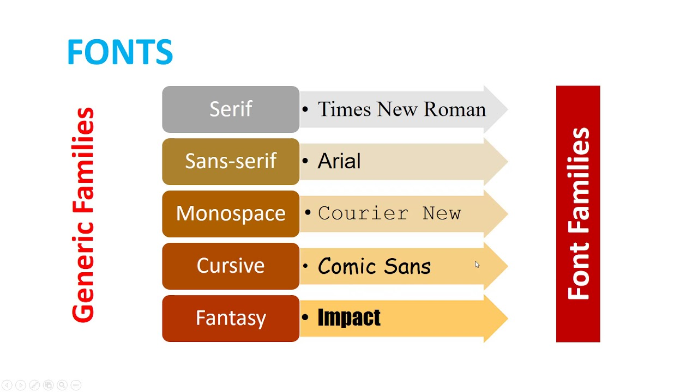
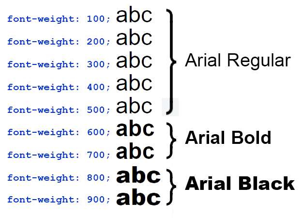
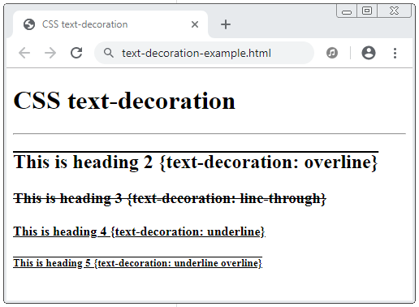

Font-family
A "família" a que aquela fonta pertence.

Font-weight
Define o peso da fonte, podendo ela ser mais fina ou grossa.

Font-size
Define o tamanho da fonte

Text-decoration
Atribui algumas propriedades a fonte, como sublinhado, riscado, podendo tirar quando por padrão aquele elemento apresenta alguma decoração.